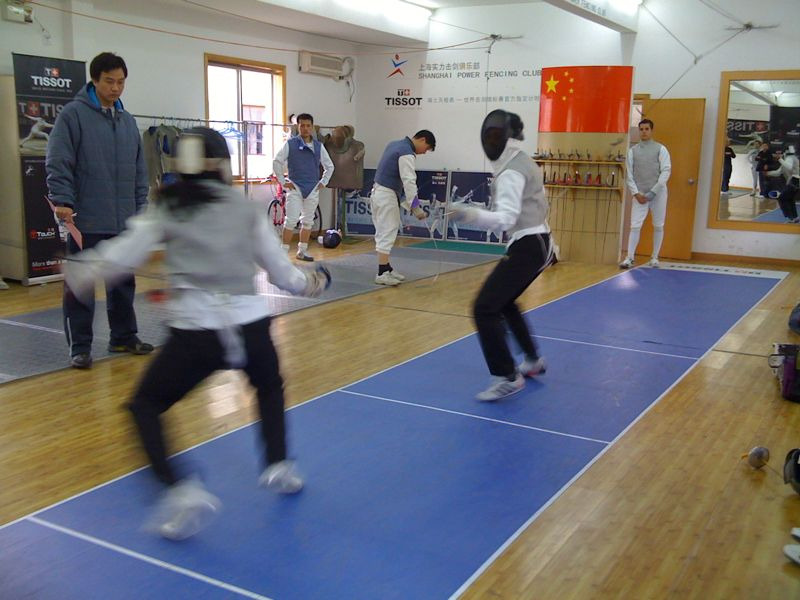

Fri, 13 Aug 2010 12:23:00 · Fencing · Escrime
fencing bout im the lefty fencer on the

Fencing bout.. (I’m the lefty fencer on the right)
–
I should probably start practicing again, else I might forgot my moves! However, I’m in doubt as to how soon I can start putting real pressure on my left knee, especially since the surgery last April 2010. We’ll see how it goes…